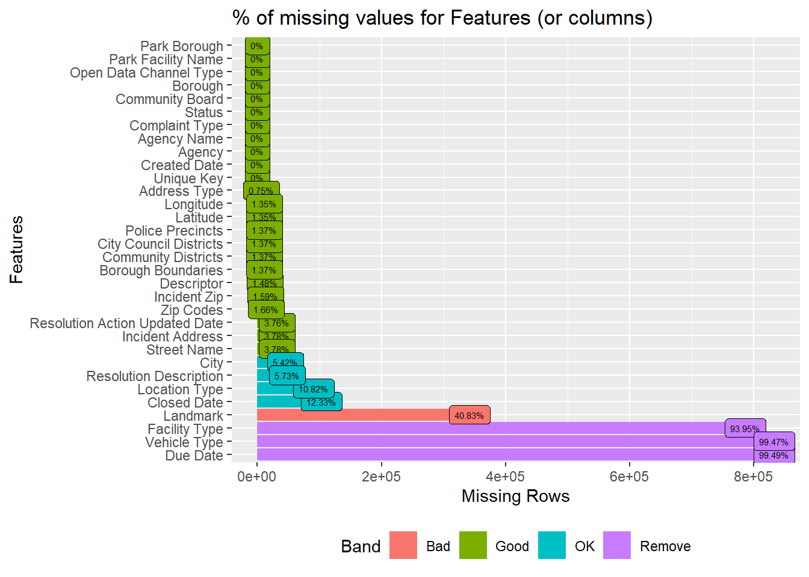

The dataset is owned by NYC OpenData and the data was provided by 311 and Department of Information Technology and Telecommunications (DoITT) with the frequency of update set to daily. It offers a comprehensive view of service requests, particularly in terms of location specificity. There are multiple columns in the dataset using which we can help us pinpoint the exact location of the raised request.
As we have such a comprehensive dataset which gets updated daily, there are 34.1M rows with 41 columns in it. It covers all the service requests from 2010 till the present date.
However we discovered the following issues with the dataset -
Due to the large dataset size, downloading the dataset as csv becomes difficult (>6GB in size).
Reading such a large dataset in memory also becomes an issue causing RStudio session to crash.
Multiple columns in the dataset were redundant as they would help us in answering the proposed questions
Another issue is mentioned on the NYC OpenData website - Due to pandemic call handling modifications, the ‘Open Data Channel Type’ values may not accurately indicate the channel the Service Request was submitted in for the period starting March 2020.
Many of the data visualization libraries (eg. VIM, narniar) fail for big datasets and raise errors. As a result, a subset of the dataset is necessary for visualization.
As a result, instead of reading the entire dataset starting with rows from the year 2010 till the current date, we have used a subset of the data of appropriate size (starting from Sept 2023 till Nov 2023).
Plan for importing the dataset -
Since the dataset size is big, we cannot directly download the data and then subset for usage. Instead NYC OpenData has a data exploration tool to filter records before exporting the dataset.
We used the tool to filter for records starting from Sept 2023 till the current date and also excluded the redundant columns.
The dataset was exported as a CSV file and then used for further analysis.
The dimensions of the subset: 837k rows by 32 columns, 350MB
2.2 Research Plan
As seen in Section 1.3, these are the questions and the proposed methods we plan to adopt, to answer them. With these issues explored, it should give students an idea of which areas/streets are more problematic (more complaints; complaints of a non-trivial nature such as rat or noise issues; slow response speed by authorities to address them; ) and hence might be good to avoid.
Which borough has the most complaints, and the least?
We will plot the Borough features (eg. Borough) with a bar chart, sorted in descending order, to see which boroughs have the most/least complaints over the given time period. As this Borough feature has no missing values, we can use it to plot, without needing any data imputation. Locations with high number of complaints, may be less desirable to live in.
Which complaint types are the most numerous, and the least?
Similar to question 1, we can use a bar chart to do this exploration. We can use the feature “Complaint Type” for this visualisation. Certain complaint types are more significant (eg. persistent loud noises, rat issues), while some might be less bothersome, depending on one’s priorities (eg. illegal parking is less of an issue for student tenants, but more annoying for residents with cars).
What are the locations that various complaint types are associated with?
We will make use of address features (eg. Borough, Street Name), and the Complaint Type feature, to plot multiple heatmaps (1 for each address feature). The higher the color intensity, the worse the area in terms of that Complaint Type’s count. Since Borough and Street Name features have very few missing values (0-3%), our plots would be a comprehensive representation of the dataset. Locations with high number of significant complaints, may be less desirable to live in.
Proportion of complaints that were handled by different departments?
We can plot the Agency feature, against the Complaint Type and the Status feature, using a mosaic plot, to see the types of complaints successfully closed/left unclosed by each agency. A low closure count may indicate ineffective responses by the authorities, and may not bode well for people living in that area especially if the complaints are serious in nature (eg. rodent issues).
Types of complaints that get closed the fastest/slowest, by using the mean resolution time to close a request.
We can use the Created and Closed Dates features to create a new column “Closing Duration”, aggregate the mean duration for each Complaint Type, and plot the mean Closing Duration against each Complaint Type. If necessary, we may use the median instead of the mean. We can plot this using a box/violin plot.
But to do so, we first need to pre-process the date related features, and convert the strings into timestamps, so as to calculate the duration.
We can also plot the mean Closing Duration, against the location features, using a chloropeth map, to see which locations close complaints the fastest/slowest.
These are also indicators of the effectiveness/responsiveness of the relevant authorities, depending on location and the issue at hand.
What are the trends in service requests over time?
We can plot a time series line chart/ridgeline plot, using the Complaint Types (take the sum eg. for each Borough) plotted against time based features (Created Date, binned into weeks of the year). We could explore adding interactive filters to drill down into each location, to see the trend of different complaint types per location. A persistently high complaint count may be a bad sign for residents in the affected areas, or may indicate ineffective, non-permanent resolutions of issues by the relevant authorities - which all point towards a less-than-pleasant living environment.
~~~
For all the above questions, depending on the results that we observe, we may drill down to lower level features. For example, for certain Boroughs with high number of complaints, we can drill down to Street/Zipcode/Community District levels, to investigate the specific areas that contribute most to the issue.
2.3 Missing value analysis
Code
library(readr)library(DataExplorer)# library("googledrive")#load datadf <-read_csv("C:\\Users\\varun\\Downloads\\311_Service_Requests_from_20230901_to_20231129.csv",show_col_types =FALSE)# df <- drive_read_string("https://drive.google.com/file/d/1UsYevTBsztmkhGO45Fubz1ToqzoeNHcV/view?usp=drive_link", type = 'csv') #always needs authentication, may not be ideal.# plot % of missing values for columns plot_missing(df, title ="% of missing values for Features (or columns)", geom_label_args =list("size"=2))

Comments
We can see that the top few columns eg. Park Borough, Park Facility Name, till Created Date, comprise 0% missing values. That increases to 0.7%-3.7% from Address Type to Street Name. These are still in the Good range (<5%, per documentation). One another observation is that the columns from Police Precincts till Borough Boundaries have the same percentage of missing values.
For City to Closed Date, the number of missing values rises to 5%-12%, in the OK range (<5% to 40%). For Landmark, this increases to 40%, in the Bad range (>40% to 80% range).
For Facility Type, Vehicle Type, Due Date, almost all rows (>93%) have missing values, which is so high that the package parks them under the Remove range (>80%).**
Bar 3: There are no columns that are completely empty. However, this doesn’t mean that all columns are useful, as it still depends on the proportion of empty values for each column (seen in 1st visualisation above. Highly empty columns may not be as useful), and the relevance of the column to the questions we are answering.
Bar 4: There are also no rows that are completely filled. This might not be such a major problem, if the key columns that we’re interested in, are filled.
Bar 5: 12% of the entire dataset’s cells are empty. This is not such a big problem, if the key columns that we’re interested in, are filled.